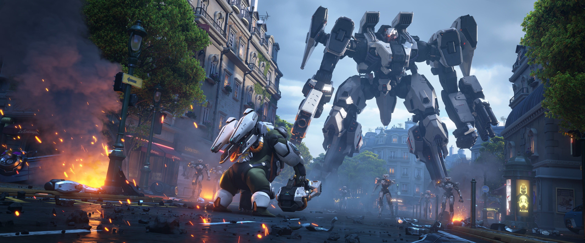
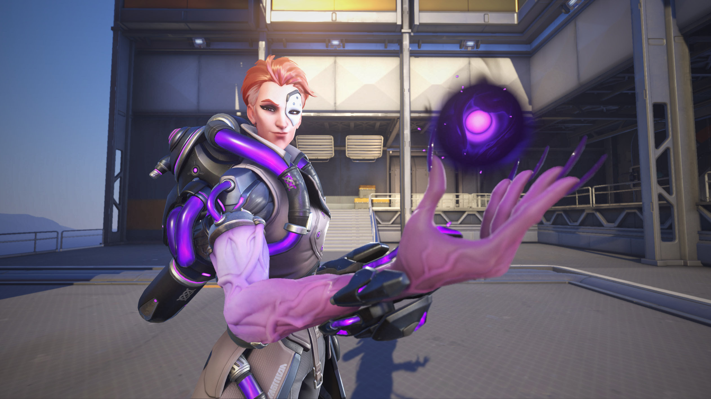
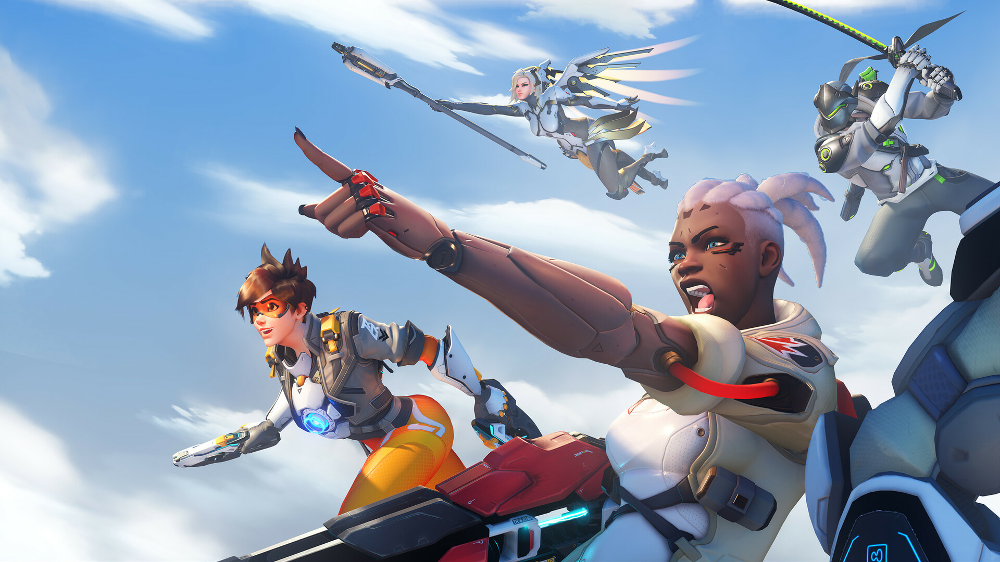
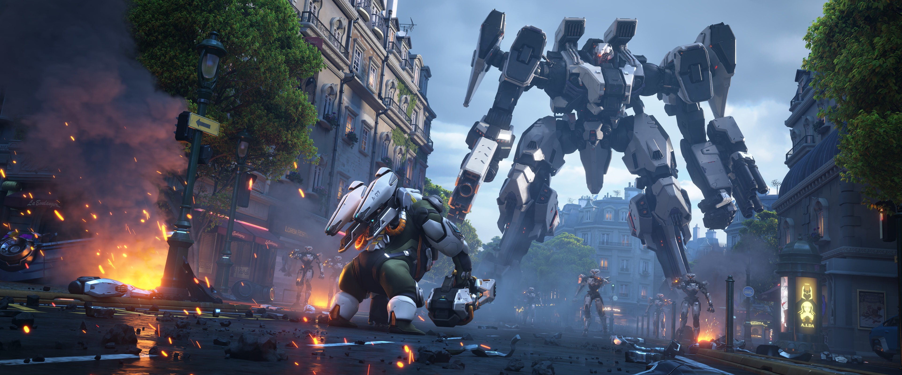
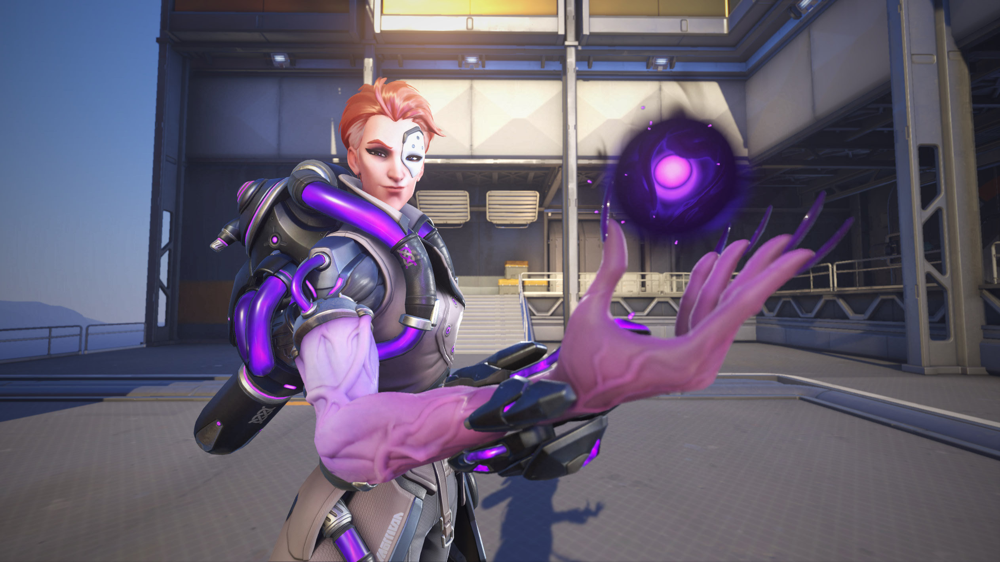
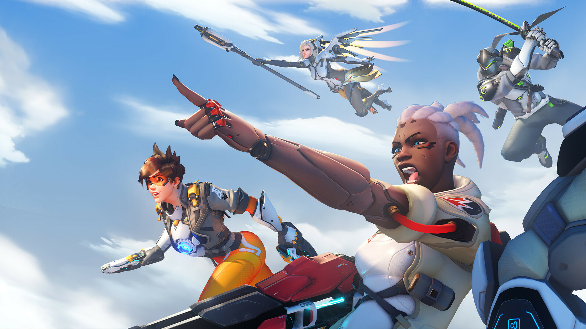

Overwatch 2 é um jogo eletrônico multijogador de tiro em primeira pessoa publicado e distribuído pela Blizzard Entertainment. A Blizzard Entertainment anunciou Overwatch 2 durante a BlizzCon 2019. Overwatch 2 foi lançado para Playstation 4, Playstation 5, Xbox One, Xbox Series X/S, Nintendo Switch e Microsoft Windows.[2]
Seu objetivo é: "Eliminar seus inimigos e ser o maior campeão".
Anunciado no fim de março via redes sociais, o beta de Overwatch 2 foi anunciado para lançar no dia 26 de abril. Onde ficou disponível quatro novos mapas, o novo modo de jogo Avanço e o novo herói Sojourn.
Imagens do Jogo
 





JOGABILIDADE
Overwatch 2 contará com novos cenários PvE e PvP. Um exemplo do PvE é o Story Experience.E um exemplo do PvP é o Avanço.
Os modos serão lançados junto com vários novos mapas e heróis, novo HUD e uma grande atualização de mecanismo.
Overwatch 2 substituirá o Overwatch original como uma atualização e, como tal, o conteúdo PvP será gratuito para usuários existentes.O cenário PvP do jogo será alterado de 6v6 para 5v5, com as funções limitadas a um tanque, dois danos e dois suportes. As passivas dessas funções serão alteradas ainda mais - heróis de dano se moverão mais rápido, heróis de tanque terão reduções de repulsão (enquanto recebem menos carga quando atacados por inimigos)
E heróis de suporte regeneram automaticamente a saúde enquanto estão fora de combate. As aparências atualizadas de todos os heróis atuais serão exclusivas de Overwatch 2.
Para saber mais Venha jogar conosco!!!!!